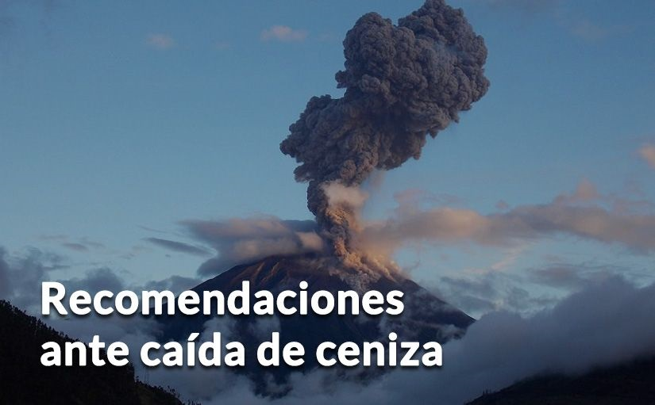

Son fragmentos de magma que contienen polvo, arena y fragmentos de roca.
Son fragmentos de magma que contienen polvo, arena y fragmentos de roca.|  |
CONOZCA LA CENIZA
Son fragmentos de magma que contienen polvo, arena y fragmentos de roca.
Se produce en el proceso de erupción volcánica y, luego de estar en el aire, se asienta en los campos, en las calles, sobre los techos y terrazas.
Ocasiona tormentas eléctricas, interrumpe las operaciones de las maquinarias y ocasiona fallas en los motores.
Derrumba techos si no se limpian de manera frecuente y segura. Verifica, oportunamente, la resistencia de tu techo con ceniza seca y con ceniza mojada.
AFECCIONES A LA SALUD POR LA CAÍDA DE CENIZA
Causa problemas respiratorios, disminuye la visibilidad y contamina el agua.
Puede provocar problemas respiratorios: use mascarilla o toallas húmedas si está expuesto.
Puede afectar la parte frontal de los ojos, irritar las mucosas y provocar reacciones alérgicas. Use lentes protectores o gafas de piscina si está expuesto.
RECOMENDACIONES PARA LA SALUD DE LAS PERSONAS
Ante caída de ceniza, no se exponga si no es necesario. Si lo hace, cúbrase los ojos y las vías respiratorias; y, use ropa que cubra su piel.
Las frutas y vegetales expuestos a la ceniza se pueden consumir solo si son muy bien lavados con agua limpia.
Las personas que tienen enfermedades de vías respiratorias deben cargar siempre sus medicamentos necesarios.
MEDIDAS GENERALES Y CONSECUENCIAS DE LA CAÍDA DE CENIZA
Sella las puertas y ventanas del lugar en el que te encuentres; usa cintas adhesivas o trapos húmedos.
Desconecta y cubre con mantas de tela tus equipos electrónicos como televisores, radios, refrigeradoras, etc.
Barre los techos cada vez que pare la caída de ceniza para evitar que se caigan. Hazlo con la boca y nariz protegidas con bufanda húmeda o mascarilla; y, cubre tu cuerpo.
Si has estado expuesto a la ceniza, cámbiate la ropa antes de entrar a casa o al lugar en donde permaneces seguro.
Cepilla, sacude y pon en remojo la ropa antes de lavarla.